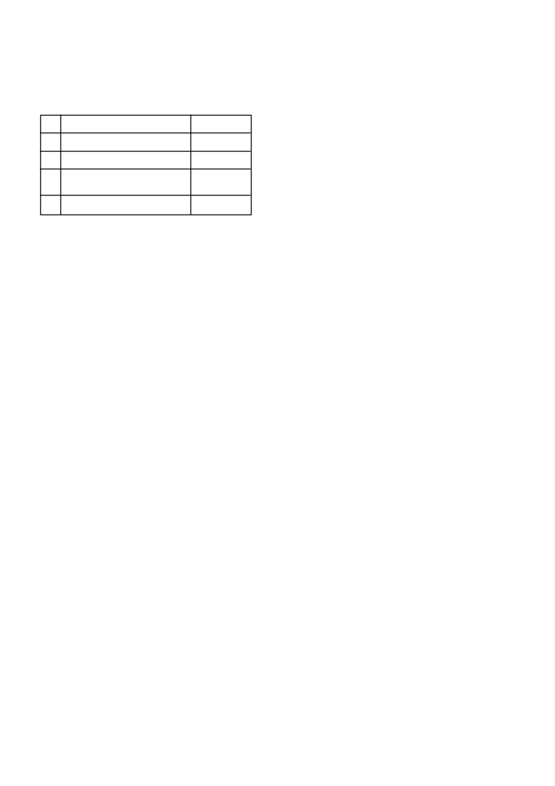

CAMIX
is verenigbaar met GESAPRIM SUPER (L3914) en
KARATE ZEON (L6330).
5.2 Verdunningswater:
Gebruik slegs skoon water en buffer met ‘n geregistreerde buffer.
5.3 Menginstruksies:
Vul die spuit- of mengtenk met skoon water en aktiveer die
roerder. Roer aanhoudend gedurende die meng- en toedienings-
proses. Indien die roer proses vir langer as 5 min gestaak word,
moet die spuitmengsel hersuspendeer word. Sodra die spuit- of
mengtenk halfvol met water is, voeg
CAMIX
stadig by en roer
totdat dit volledig gedispergeer het.
Wanneer in ‘n tenkmengsel gebruik word, moet
CAMIX
eerste by
die water gevoeg word. Voeg hierna die suspensie konsentrate
(SC) soos PRIMAGRAM GOLD by. Hierna kan die emulgeerbare
konsentrate (EC) soos KARATE EC of METAGAN GOLD 960
EC of DUAL GOLD bygevoeg word. Die benatter moet laaste
bygevoeg word. Maak die tenk vol met water tot by die verlangde
volume terwyl aanhoudend geroer word.
5.4 Grondtoediening:
CAMIX
moet op dieselfde dag wat die mengsel aangemaak is,
toegedien word.
Dien toe deur middel van ‘n trekkergemonteerde spuitbalk wat
korrek gekalibreer is met aanhoudende roering om ten minste
200 - 300
l
spuitmengsel/ha te lewer. Voorkom oorvleueling van
spuitwydtes.
Platwaaier hidrouliese spuitpunte (110º) word aanbeveel vir opti-
male bedekking.
Geen vooropkoms toedienings mag met kousbalk spuite gedoen
word nie.
Indien nie aan hierdie voorsorg maatreëls gehoor gegee word nie,
kan die registrasiehouer nie verantwoordelik gehou word vir enige
gevolglike verlies as gevolg van swak onkruidbeheer of gewas
skade nie.
Reën of besproeiing van 10 - 20 mm is nodig na toediening om
die middel tot in die ontkiemingsone te loog. As hierdie neerslag
nie binne 14 dae van toediening plaasvind nie kan ‘n verlaagde
effektiwiteit verwag word.
5.5 Lugtoediening (mielies – slegs vooropkoms toedie-
nings):
Verhoed altyd die wegdrywing van chemikalië.
CAMIX
mag slegs deur lugbespuiting toegedien word deur ‘n
geregistreerde lugbespuitingsoperateur met ‘n korrek gekali-
breerde, geregistreerde vliegtuig volgens die instruksies van
SANS 10118 (“Aerial application of Agricultural Remedies”).
Dit is belangrik om te verseker dat die spuitmengsel eweredig oor
die teikenarea versprei word en dat die verlies aan spuitmengsel
tydens toediening tot ‘n minimum beperk word. Dit is dus belang-
rik om aan die volgende kriteria te voldoen:
5.5.1
Toediening parameters:
•
Volume
: ‘n Volume van 25 - 30
l
/ha word aanbeveel.
Aangesien
CAMIX
nie teen ‘n verlaagde volume getoets is
nie, kan die registrasiehouer nie doeltreffendheid waarborg, of
verantwoordelik gehou word vir enige nadelige effekte indien
hierdie produk teen ‘n laer volume, as hierbo aanbeveel, uit die
lug toegedien word nie.
•
Druppelbedekking:
‘n Druppelbedekking van 20 - 30 drup-
pels per cm
2
moet op die teikenarea herwin word.
•
Druppelgrootte
: ‘n Druppelspektrum met ‘n VMD van 350
- 400 mikrons word aanbeveel. Verseker dat die produksie
CAMIX
/ 2
bewerkings) kan lei tot die ontkieming van nuwe onkruide wat
swak beheer tot gevolg sal hê.
4.2
Opvolggewasse:
•
Indien slegs
CAMIX
gespuit is, moet die volgende wag-
periodes nagekom word:
•
Indien
CAMIX
en GESAPRIM SUPER gemeng word, volg die
gewas rotasie aanbevelings soos aangedui op die GESAPRIM
SUPER etiket.
•
Alle wisselbougewasse moet slegs na ‘n deeglike grond-
bewerking geplant word. Aangesien die produk gemetabo-
liseer word deur mikrobiese aktiwiteit, mag periodes van lae
mikrobiale aktiwiteit die residuele werking van
CAMIX
verleng.
Waarskuwing: Moontlike beskadiging van triasien sensi-
tiewe gewasse
•
Waar gronde met kalk behandel is om die pH te verhoog mag
die moontlikheid van gewas beskadiging dramaties verhoog
in gronde waar triasienes voorheen toegedien is. Dit gebeur
as gevolg van die triasien molekule wat op die klei kompleks
vervang word met kalsium katione en die triasien dus meer
beskikbaar word in die grondwater kompleks.
•
Slegs mielies moet geplant word direk na kalk toedienings.
Geen triasien sensitiewe gewasse moet na kalk toedienings
geplant word nie. Dit is selfs van toepassing indien triasiene
teen wisselbou dosisse gespuit is in vorige jare.
•
Triasien sensitiewe gewasse sluit in alle breëblaargewasse
asook alle kleingraangewasse.
•
Hierdie waarskuwing waarborg egter nie dat geen skade aan
selfs mielies in die daaropvolgende aanplanting sal voorkom
nie aangesien groot volumes triasiene beskikbaar mag raak
afhangende van die volume kalk wat toegedien word en die
reënval wat kan voorkom.
Kontak u plaaslike SYNGENTA verteenwoordiger voordat
op enige bekalkings program besluit word om gewas
keuses en gewas beskermingsprogramme te bespreek.
4.3
Faktore wat onkruidbeheer beïnvloed:
4.3.1 Vooropkomstoediening:
•
Goeie saadbed voorbereiding sonder kluite en onkruide is ‘n
voorvereiste vir goeie vooropkoms onkruidbeheer.
•
Verlengde droë grond toestande na ‘n
vooropkoms
toe-
diening mag verlaagde beheer van ontkiemende onkruide tot
gevolg hê.
•
In gronde met hoë organiese materiaal inhoud of gronde met
plant residue op die grond oppervlakte soos bv. gebrande
materiaal of stoppels sal
CAMIX
‘n verkorte nawerking hê.
•
Moet nie
CAMIX
toedien onder stremmingstoestande nie bv.
versuiptoestande, baie koue toestande, oormatige reën, swak
kunsmistoediening, lae pH, ens.
•
Tenkmengsels van
CAMIX
met organofosfate bv. chlorpirifos
moet vermy word aangesien dit kan lei tot gewas skade.
•
CAMIX
moet nie vooropkoms toegedien word waar vloed-
besproeing gebruik word.
5. GEBRUIKSAANWYSINGS:
Gebruik slegs soos aangedui.
5.1 Verenigbaarheid:
Koring en gars
Graansorghum
Aartappels
Sojabone, droëbone, grondbone,
sonneblom en katoen
Alle ander gewasse
1 maand
2 maande
6 maande
9 maande
24 maande
a
b
c
d
e
